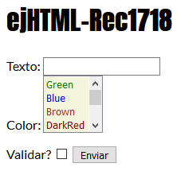
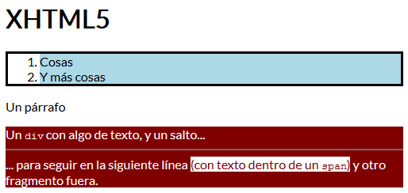

Sesión 2: Hojas de estilo (CSS)
Estilo azul
A partir de la página ej1 se pretende diseñar una hoja de estilos externa para obtener este resultado. A destacar:
- El fondo empleado, que, siendo el aspecto más sencillo de conseguir, debería servir como prueba de que la carga del estilo funciona.
- Las modificaciones aplicadas en todos los niveles de encabezamiento.
- La definición de una clase
nota aplicada a los primeros párrafos
- Algunos elementos sueltos, como la lista de definiciones y la tabla.
- Aqui esta mi intento holi
Incorporar tipografía
En este nuevo apartado se pretende aplicar la tipografía Roboto Condensed a todos los párrafos. Para ello necesitamos consultar los detalles en
Google Fonts, destacando:
- Un buscador y un sistema de selección para encontrar la tipografía deseada
- Una vez desplegada la página sobre Roboto Condensed, pulsamos en Select this font,
dando lugar a una especie de carro de la compra, que informa sobre cómo usarlo.
- Elegimos la alternativa relacionada con
@import porque solo requiere cambiar el código del CSS
Ejercicio de examen (aspecto sin CSS)
Escribe una página XHTML5 completa como la mostrada. Los detalles necesarios son: 
- En este ejercicio prescindimos de hojas de estilo.
-
ejHTML-Rec1718 actúa como título y como contenido a destacar en el cuerpo del documento.
- La viñeta precedida por "Texto:" tiene una longitud de 17
caracteres, pero únicamente admite que se escriban hasta 12. Está
asociada a la variable t.
- La viñeta precedida por "Color:" tiene las siguientes 7 entradas:
Green, Blue, Brown, DarkRed, Gold, Orange y Red.
- Cada una es un identificador de color y pueden seleccionarse varios de ellos.
- Se muestran 4 simultáneamente.
- El valor asociado a cada caso son las 2 primeras letras (p.ej. la cadena "Gr" para el caso "Green").
- Esta viñeta está asociada a la variable c.
- La marca, o su ausencia, colocada junto a "Validar?" se reflejará en la variable v.
- El botón Enviar debe activar el CGI con url
http://a.b.c/d por el método POST.
Ejercicio de examen (página con CSS)
Escribe una página XHTML5 COMPLETA, incluyendo la cabecera, como la que se muestra, respetando los siguientes requisitos: 
- Todo el texto, salvo las palabras
div y span, emplea una tipografía llamada Lato, accesible mediante el URL https://fonts.googleapis.com/css?family=Lato
- Las palabras
div y span se muestran como texto monoespaciado (¡pero no <tt>!).
- Debe referenciar una hoja de estilos llamada
st1.css, que también debe ser desarrollada.
- Hay un
div con identificador d1, y un span de la clase s1.
- Pueden observarse cuatro colores: blanco, negro, un color oscuro (maroon) y otro claro (lightblue).
- Observarás un fondo y borde en la lista.
Otras sesiones...
Puede que no estén todas disponibles
- Sesión 1
- Sesión 2
- Sesión 3
- Sesión 4
<!DOCTYPE html>
<html lang="es-es">
<head>
<meta charset="utf-8" />
<meta name="description" content="Laboratorio 1 de DEW, ETSINF, curso 2021/22" />
<meta name="author" content="Vicent Sornosa" />
<title>Segunda sesi&oacute;n</title>
</head>
<body>
<h1>Laboratorio 1 de DEW, sesión 2: Hojas de estilo</h1>
<h2>Estilo azul</h2>
<p>A partir de la página <code>ej1</code> se pretende diseñar una hoja de estilos externa para obtener este <a href="http://personales.upv.es/rgarcia/dew2/ej1EstiloAzul.html">resultado</a>. A destacar:<br>
</p><ul>
<li>El fondo empleado, que, siendo el aspecto más sencillo de conseguir, debería servir como prueba de que la carga del estilo funciona.</li>
<li>Las modificaciones aplicadas en todos los niveles de encabezamiento.</li>
<li>La definición de una clase <code>nota</code> aplicada a los primeros párrafos</li>
<li>Algunos elementos sueltos, como la lista de definiciones y la tabla.</li>
<li>Aqui esta mi intento <a href="ej1EstiloenAzul.html"> holi</a></li>
</ul>
<h2 class="tipografico">Incorporar tipografía</h2>
<p class="tipografico">En este nuevo apartado se pretende aplicar la tipografía <code>Roboto Condensed</code> a <em>todos</em> los párrafos. Para ello necesitamos consultar los detalles en
<a href="https://fonts.google.com/">Google Fonts</a>, destacando:</p>
<ul class="tipografico">
<li class="tipografico">Un buscador y un sistema de selección para encontrar la tipografía deseada</li>
<li class="tipografico">Una vez desplegada la página sobre <a href="https://fonts.google.com/specimen/Roboto+Condensed">Roboto Condensed</a>, pulsamos en <em>Select this font</em>,
dando lugar a una especie de carro de la compra, que informa sobre cómo usarlo.
<ul class="tipografico">
<li class="tipografico">Elegimos la alternativa relacionada con <code>@import</code> porque solo requiere cambiar el código del CSS</li>
</ul></li>
</ul>
<h2>Ejercicio de examen (aspecto sin CSS)</h2>
<p>Escribe una página XHTML5 completa como la mostrada. Los detalles necesarios son: </p>
<ol>
<li>En este ejercicio prescindimos de hojas de estilo.</li>
<li><a href="ejHTML-Rec1718.html"> <code>ejHTML-Rec1718</code> </a> actúa como título y como contenido a destacar en el cuerpo del documento.</li>
<li>La viñeta precedida por "Texto:" tiene una longitud de 17
caracteres, pero únicamente admite que se escriban hasta 12. Está
asociada a la variable t.</li>
<li>La viñeta precedida por "Color:" tiene las siguientes 7 entradas:
Green, Blue, Brown, DarkRed, Gold, Orange y Red.
<ul><li>Cada una es un identificador de color y pueden seleccionarse varios de ellos.</li>
<li>Se muestran 4 simultáneamente.</li>
<li>El valor asociado a cada caso son las 2 primeras letras (p.ej. la cadena "Gr" para el caso "Green").</li>
<li>Esta viñeta está asociada a la variable c.</li>
</ul></li>
<li>La marca, o su ausencia, colocada junto a "Validar?" se reflejará en la variable v.</li>
<li>El botón Enviar debe activar el CGI con url <code>http://a.b.c/d</code> por el método <code>POST</code>.</li>
</ol>
<h2>Ejercicio de examen (página con CSS)</h2>
<p>Escribe una página <a href="xHTML5.html"> XHTML5 </a> COMPLETA, incluyendo la cabecera, como la que se muestra, respetando los siguientes requisitos: </p>
<ul><li>Todo el texto, salvo las palabras <code>div</code> y <code>span</code>, emplea una tipografía llamada Lato, accesible mediante el URL <code>https://fonts.googleapis.com/css?family=Lato</code></li>
<li>Las palabras <code>div</code> y <code>span</code> se muestran como texto monoespaciado (¡pero no <code>&lt;tt&gt;</code>!).</li>
<li>Debe referenciar una hoja de estilos llamada <code>st1.css</code>, que también debe ser desarrollada.</li>
<li>Hay un <code>div</code> con identificador <code>d1</code>, y un <code>span</code> de la clase <code>s1</code>.</li>
<li>Pueden observarse cuatro colores: blanco, negro, un color oscuro (maroon) y otro claro (lightblue).</li>
<li>Observarás un fondo y borde en la lista.</li>
</ul>
<h2>Otras sesiones...</h2>
<p>Puede que no estén todas disponibles</p>
<ol>
<li><a href="http://personales.alumno.upv.es/vsorris/dew1">Sesión 1</a></li>
<li><a href="http://personales.alumno.upv.es/vsorris/dew2">Sesión 2</a></li>
<li><a href="http://personales.alumno.upv.es/vsorris/dew3">Sesión 3</a></li>
<li><a href="http://personales.alumno.upv.es/vsorris/dew4">Sesión 4</a></li>
</ol>
CSS CODE:
@import url(RobotoCondensed-Bold.ttf);
@import url(RobotoCondensed-BoldItalic.ttf);
@import url(RobotoCondensed-Italic.ttf);
@import url(RobotoCondensed-Light.ttf);
@import url(RobotoCondensed-LightItalic.ttf);
@import url(RobotoCondensed-Regular.ttf);
@font-face {
font-family: RobotoCondensed-Regular;
src: url(RobotoCondensed-Regular.ttf);
}
.tipografico {
font-family: RobotoCondensed-Regular;
font-size: 16px;
}